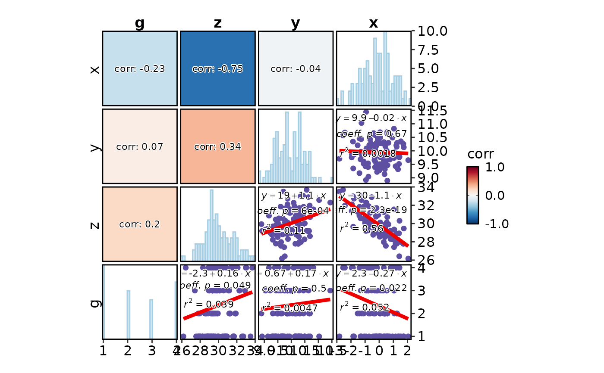
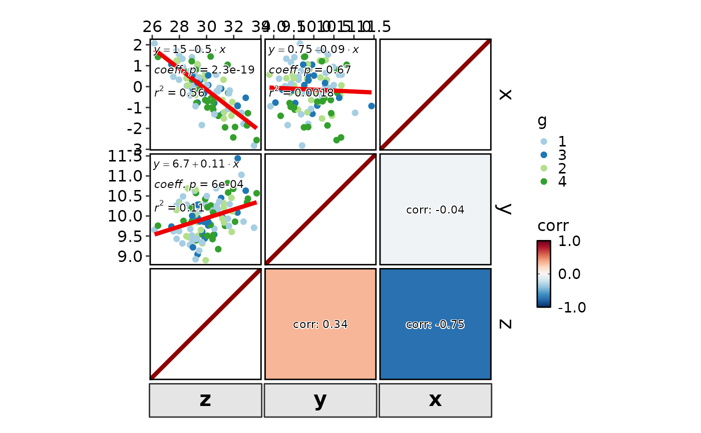
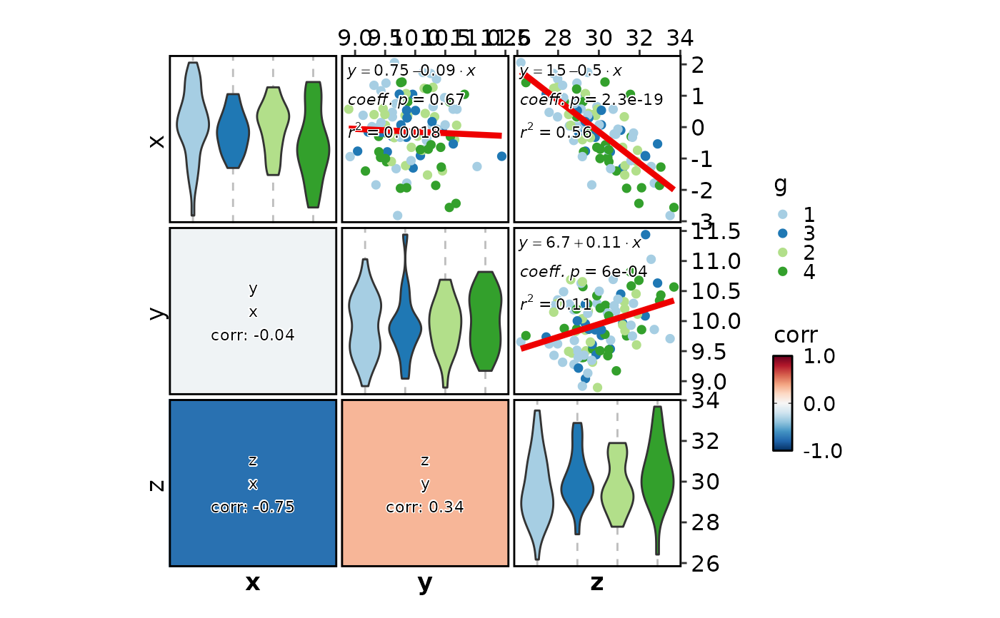
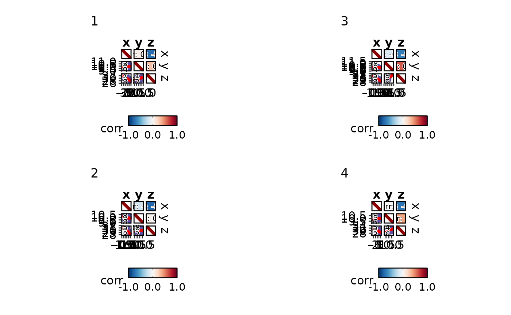
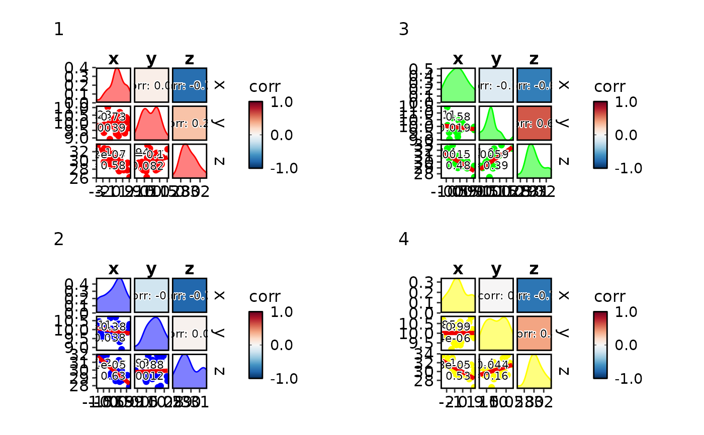

Generate a grid of scatter correlation plots for all pairs of variables.
Usage
CorPairsPlot(
data,
columns = NULL,
group_by = NULL,
group_by_sep = "_",
group_name = NULL,
split_by = NULL,
split_by_sep = "_",
diag_type = NULL,
diag_args = list(),
layout = c(".\\", "\\.", "/.", "./"),
cor_method = c("pearson", "spearman", "kendall"),
cor_palette = "RdBu",
cor_palcolor = NULL,
cor_size = 3,
cor_format = "corr: {round(corr, 2)}",
cor_fg = "black",
cor_bg = "white",
cor_bg_r = 0.1,
theme = "theme_this",
theme_args = list(),
palette = ifelse(is.null(group_by), "Spectral", "Paired"),
palcolor = NULL,
title = NULL,
subtitle = NULL,
facet_by = NULL,
legend.position = "right",
legend.direction = "vertical",
seed = 8525,
combine = TRUE,
nrow = NULL,
ncol = NULL,
byrow = TRUE,
...
)Arguments
- data
A data frame.
- columns
The column names of the data to be plotted. If NULL, all columns, except
group_by, will be used.- group_by
Columns to group the data for plotting For those plotting functions that do not support multiple groups, They will be concatenated into one column, using
group_by_sepas the separator- group_by_sep
The separator for multiple group_by columns. See
group_by- group_name
The name of the group in the legend.
- split_by
The column(s) to split data by and plot separately.
- split_by_sep
The separator for multiple split_by columns. See
split_by- diag_type
The type of the diagonal plots. Available types: "density", "violin", "histogram", "box", "none".
- diag_args
A list of additional arguments to be passed to the diagonal plots.
- layout
The layout of the plots. Available layouts: ".\", "\.", "/.", "./".
'\' or '/' means the diagonal plots are on the top-left to bottom-right diagonal.
'.' means where the scatter plots are.
- cor_method
The method to calculate the correlation. Available methods: "pearson", "spearman", "kendall". The correlation will be shown in the other triangle of the scatter plots.
- cor_palette
The color palette for the correlation tile plots.
- cor_palcolor
Custom colors used to create a color palette for the correlation tile plots.
- cor_size
The size of the correlation text.
- cor_format
The format of the correlation text. Default is "corr: %.2f". It will be formatted using
sprintf(cor_format, corr).- cor_fg
The color of the correlation text.
- cor_bg
The background color of the correlation text.
- cor_bg_r
The radius of the background of the correlation text.
- theme
A character string or a theme class (i.e. ggplot2::theme_classic) specifying the theme to use. Default is "theme_this".
- theme_args
A list of arguments to pass to the theme function.
- palette
A character string specifying the palette to use. A named list or vector can be used to specify the palettes for different
split_byvalues.- palcolor
A character string specifying the color to use in the palette. A named list can be used to specify the colors for different
split_byvalues. If some values are missing, the values from the palette will be used (palcolor will be NULL for those values).- title
A character string specifying the title of the plot. A function can be used to generate the title based on the default title. This is useful when split_by is used and the title needs to be dynamic.
- subtitle
A character string specifying the subtitle of the plot.
- facet_by
A character string specifying the column name of the data frame to facet the plot. Otherwise, the data will be split by
split_byand generate multiple plots and combine them into one usingpatchwork::wrap_plots- legend.position
A character string specifying the position of the legend. if
waiver(), for single groups, the legend will be "none", otherwise "right".- legend.direction
A character string specifying the direction of the legend.
- seed
The random seed to use. Default is 8525.
- combine
Whether to combine the plots into one when facet is FALSE. Default is TRUE.
- nrow
A numeric value specifying the number of rows in the facet.
- ncol
A numeric value specifying the number of columns in the facet.
- byrow
A logical value indicating whether to fill the plots by row.
- ...
Additional arguments.
Examples
# \donttest{
set.seed(8525)
data <- data.frame(x = rnorm(100))
data$y <- rnorm(100, 10, sd = 0.5)
data$z <- -data$x + data$y + rnorm(100, 20, 1)
data$g <- sample(1:4, 100, replace = TRUE)
CorPairsPlot(data, diag_type = "histogram", diag_args = list(bins = 30, palette = "Paired"),
layout = "/.")

CorPairsPlot(data, group_by = "g", diag_type = "none", layout = "./",
theme_args = list(axis.title = element_textbox(
color = "black", box.color = "grey20", size = 16, halign = 0.5, fill = "grey90",
linetype = 1, width = grid::unit(1, "npc"), padding = ggplot2::margin(5, 5, 5, 5))))

CorPairsPlot(data, group_by = "g", diag_type = "violin", layout = "\\.",
cor_format = "{x}\n{y}\ncorr: {round(corr, 2)}")

CorPairsPlot(data, split_by = "g", diag_type = "none", layout = ".\\",
legend.position = "bottom", legend.direction = "horizontal", group_name = "group")

CorPairsPlot(data, split_by = "g",
palcolor = list("1" = "red", "2" = "blue", "3" = "green", "4" = "yellow"))
#> Using `bins = 30`. Pick better value with `binwidth`.
#> Using `bins = 30`. Pick better value with `binwidth`.
#> Using `bins = 30`. Pick better value with `binwidth`.
#> Using `bins = 30`. Pick better value with `binwidth`.
#> Using `bins = 30`. Pick better value with `binwidth`.
#> Using `bins = 30`. Pick better value with `binwidth`.
#> Using `bins = 30`. Pick better value with `binwidth`.
#> Using `bins = 30`. Pick better value with `binwidth`.
#> Using `bins = 30`. Pick better value with `binwidth`.
#> Using `bins = 30`. Pick better value with `binwidth`.
#> Using `bins = 30`. Pick better value with `binwidth`.
#> Using `bins = 30`. Pick better value with `binwidth`.

# }